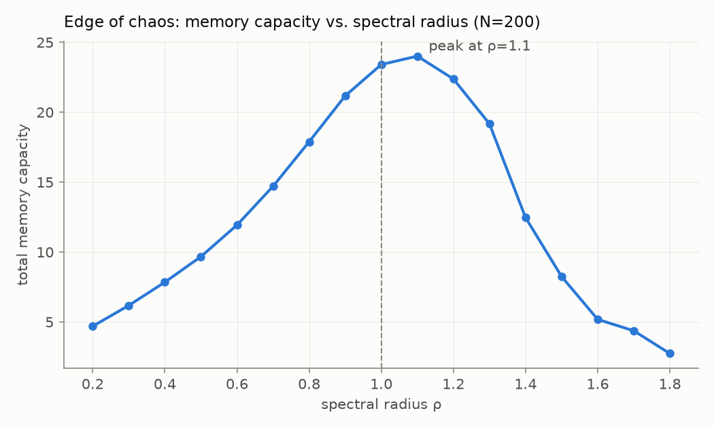
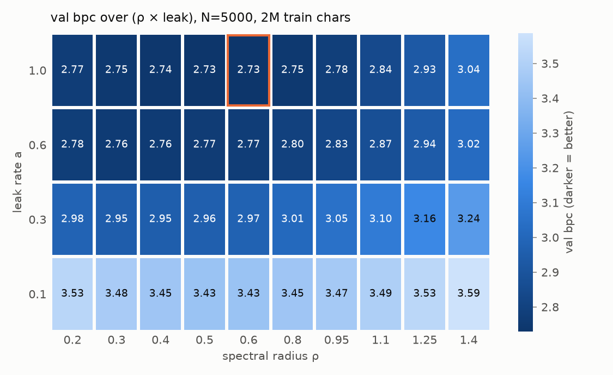
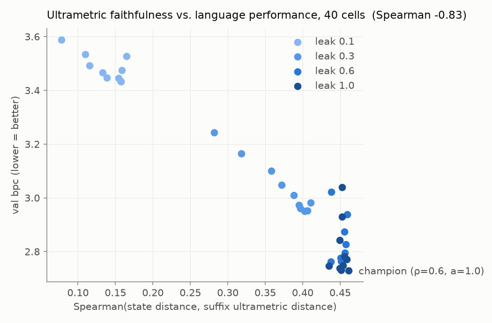
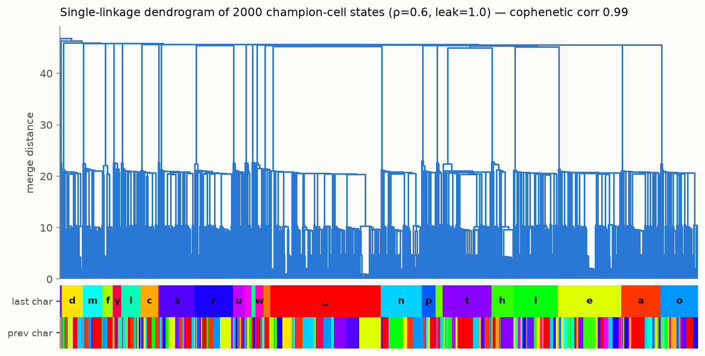
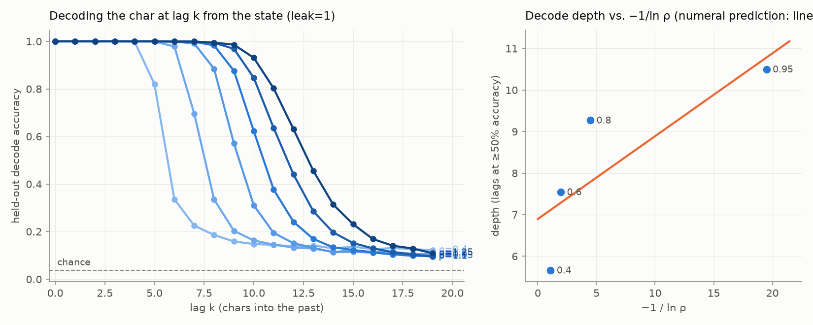
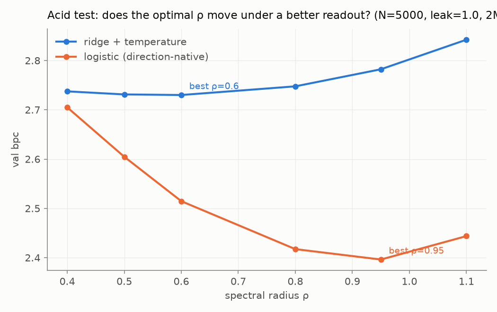
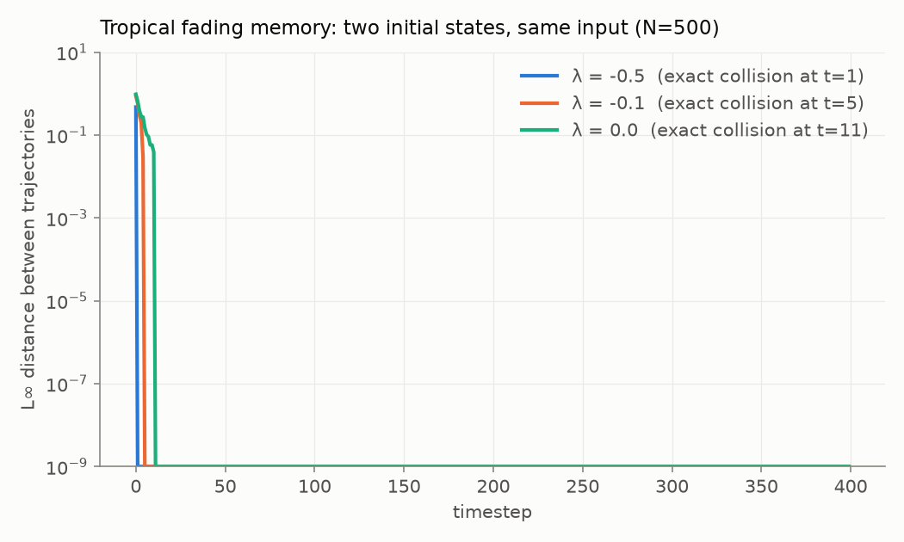
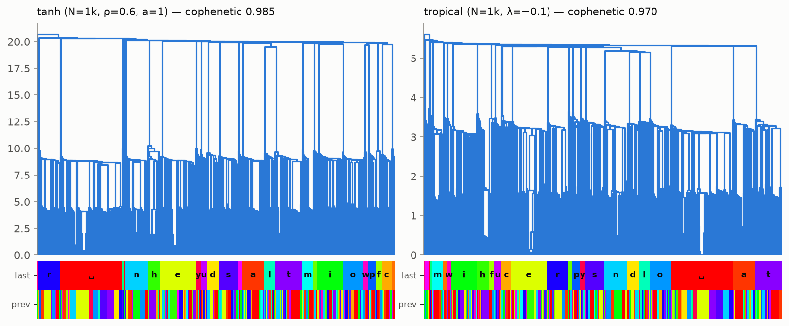
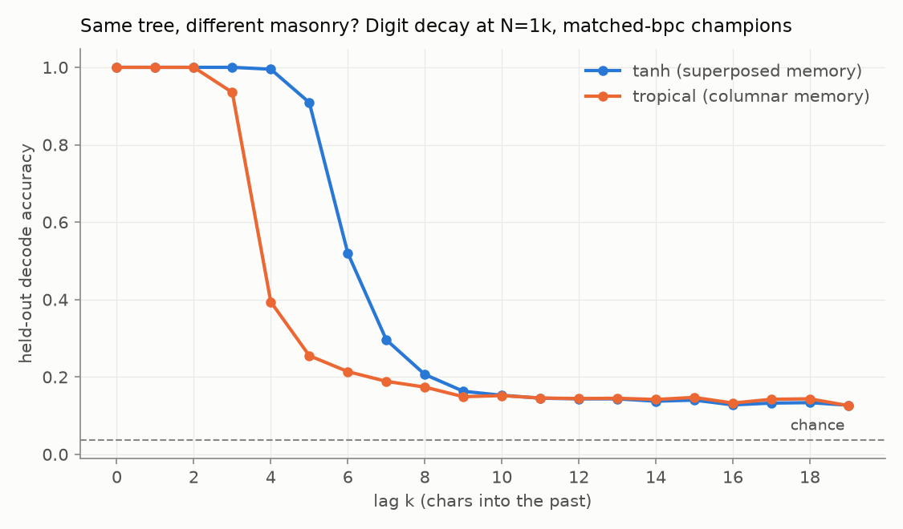

cd ~/experiments/reservoir-lm && less note.txt
Suffix-Tree Geometry and a Readout-Dependent Edge in Reservoir Language Models
Abstract. We fit only a readout (ridge, then multinomial logistic) on the states of fixed, randomly parameterized dynamical systems driven by text8, and evaluate character-level language modeling against count-based n‑gram baselines computed on identical splits. Four results. (1) Under a ridge readout, a 40-configuration grid over spectral radius ρ and leak rate a has an interior optimum at ρ ≈ 0.5–0.6, a = 1: not at the edge of stability, contrary to the expectation set by memory-capacity analysis. (2) State geometry mirrors the suffix ultrametric: the Spearman correlation between per-configuration ultrametric faithfulness and bits per character is −0.83, and single-linkage cophenetic correlation at the optimum is 0.990. (3) A max-plus (tropical) reservoir is statistically indistinguishable from the tanh reservoir at matched size, data, and readout; it exhibits the same suffix-keyed geometry, and its state is exactly determined by the trailing 7 characters, a finite-state machine in which 370 suffix classes are merged, i.e. partially minimized by the dynamics. (4) A pre-registered readout intervention relocates the optimum: under a logistic readout the best ρ is 0.95, and 42% of the high-ρ penalty survives. The apparent absence of an edge-of-chaos optimum is a property of the readout family, not of the dynamics alone. The best configuration reaches 2.398 test bpc with 1.35×10⁵ trainable parameters, statistically indistinguishable from a 4-gram model on the same splits.
§1 Setup and baselines
Corpus: text8 (10⁸ characters, alphabet size V = 27; splits 90M/5M/5M). Metric: bits per character on held-out text,
bpc = −(1/T) Σ_t log₂ p(c_{t+1} | state_t).
The reservoir is a sparse leaky echo state network with fixed random weights; the input is the one-hot character:
x_t = (1 − a)·x_{t−1} + a·tanh(W x_{t−1} + W_in u_t + b),
W rescaled so that its spectral radius is ρ; W sparse (10 nonzeros/row); x_t ∈ ℝ^N.
The only trained parameters are a readout from x_t to next-character scores. Readout A is ridge regression to one-hot targets via accumulated normal equations, β = (XᵀX + λI)⁻¹XᵀY, with a two-parameter temperature calibration fit on validation; readout B (§3) is multinomial logistic regression on the same frozen states. N = 5000 throughout unless stated; every run is seeded and each result JSON records its full configuration.
Baselines are add-α n-grams (α tuned on validation) computed on the same splits. All headline numbers below are test-split values.
| model | test bpc | trainable params | training |
|---|---|---|---|
| uniform | 4.755 | 0 | none |
| 1-gram | 4.127 | 27 | seconds |
| 2-gram | 3.447 | ~7×10² | seconds |
| 3-gram | 2.920 | ~2×10⁴ | seconds |
| ESN N=5k, ridge, defaults (ρ=0.95, a=0.6) | 2.805 | 1.35×10⁵ | 0.16 s solve |
| ESN N=5k, ridge, tuned (ρ=0.6, a=1) | 2.696 | 1.35×10⁵ | 0.16 s solve |
| ESN N=5k, logistic, ρ=0.95 (2M chars) | 2.448 | 1.35×10⁵ | ~2 min SGD |
| ESN N=5k, logistic, ρ=0.95 (5M chars) | 2.398 | 1.35×10⁵ | ~3.5 min SGD |
| 4-gram | 2.392 | ~5×10⁵ | seconds |
| 5-gram | 2.095 | ~1.4×10⁷ | seconds |
| small trained transformer (literature) | ~1.4–1.6 | 10⁶–10⁷ | hours |
Classical reservoir analysis predicts an optimum near the stability boundary: linear memory capacity over white-noise input peaks just past ρ = 1 (Fig. 1, N = 200 control experiment). The language task disagrees. Over a 10×4 grid in (ρ, a) at N = 5000 under the ridge readout (2×10⁶ training characters per cell), validation bpc is monotone in leak rate (a = 1 dominates everywhere), with a broad interior optimum at ρ ≈ 0.5–0.6 (Fig. 2). Both low-ρ and high-ρ boundaries of the basin were verified to turn upward. The scope of this claim is fixed in §3: it holds for the ridge readout family.


§2 Geometry of reservoir states
The suffix metric on character streams, d(s, s′) = 2^(−k) where k is the length of the shared trailing substring, is an ultrametric; spaces with this metric are trees, and n-gram prediction is nearest-neighbor prediction under it. For each sweep configuration we sample 2×10⁴ post-washout states with their trailing suffixes and define
faithfulness = Spearman( ‖x_i − x_j‖₂ , 2^(−LCS(suffix_i, suffix_j)) )
over 2×10⁴ random state pairs. Faithfulness predicts language performance across the grid: Spearman(faithfulness, val bpc) = −0.83 (p = 3.5×10⁻¹¹, 40 configurations; Fig. 3). The correlation is carried by the leak axis; within the a = 1 row faithfulness is approximately constant (≈0.45) while bpc still varies with ρ; that residual is the subject of §3.

At the ridge optimum the state cloud is nearly an exact tree: single-linkage clustering of 2×10³ sampled states has cophenetic correlation 0.990, and the dendrogram's top-level partition is the identity of the last character, with the previous character partitioning each block one level down (Fig. 4). No objective ever asked for this structure; it is the fixed dynamics' own representation of the stream.

Mechanistically, at a = 1 the linearized state is Σ_k ρ^k·W_in·e(c_{t−k}), a radix-(1/ρ) expansion whose digits are the recent characters. Decoding the character at lag k from the state by ridge probe confirms the picture and locates its failure: decode depth (largest k at ≥50% held-out accuracy) is linear in −1/ln ρ for small ρ and saturates at high ρ, where accumulated digits interfere (Fig. 5). Measured depths at a = 1: 5.7 (ρ=0.4), 7.5 (0.6), 9.3 (0.8), 10.5 (0.95), 11.7 (1.1), 12.7 (1.25).

§3 Interference and the readout boundary
Combining §1 and §2: decodable memory depth increases monotonically in ρ while ridge-readout language performance deteriorates past ρ ≈ 0.55. Information demonstrably present in the state (a dedicated probe extracts it) degrades the prediction; characters held in superposition impose an interference cost on a single shared linear readout.
Whether that cost lives in the state or in the readout is testable. Before running the test we pre-registered its reading (thresholds written into the lab journal before the curve completed): logistic-readout argmin ρ ∈ [0.5, 0.6] ⇒ the tax is a property of the state ("pinned"); argmin ≥ 0.8 ⇒ it was readout poverty ("migrated"); between ⇒ partial. A second pre-registered statistic: the penalty at ρ = 1.1 above each curve's own minimum, and the logistic/ridge ratio of those penalties, the fraction of the high-ρ cost the better readout fails to remove. Protocol: identical splits, washout, and segmentation for both readouts; validation used only for early stopping (logistic) and temperature (ridge); headline numbers from the test split.
Result: migrated. The logistic argmin is ρ = 0.95 (ridge: 0.6), and the logistic advantage grows with ρ: validation delta +0.03 at ρ = 0.4, +0.40 at ρ = 1.1 (Fig. 6). The penalty ratio is 0.047/0.112 = 0.42. The optimum's location is therefore a property of the readout family; the residual 42% of the high-ρ cost is the state's own. The §1 claim revises to: the language task avoids the edge under a readout that cannot afford it. At full training budget (5M characters) the logistic configuration at ρ = 0.95 reaches val 2.338 / test 2.398, a statistical dead heat with the 4-gram (2.392), against roughly one quarter of the trainable parameters. The ridge model at the same knobs and budget: test 2.755.

§4 Semiring equivalence and automaton collapse
To test whether any of the above depends on smooth arithmetic, we built a reservoir over the max-plus (tropical) semiring, where addition is max and multiplication is +. States are best-path scores over the random reservoir graph; the recursion is a soft-Viterbi table with per-step projective normalization:
x′_i = max( max_j (W_ij + x_j), (W_in)_{i,c_t} ) ; x′ ← x′ − max_i x′_i.
The stability parameter is the maximum cycle mean λ of W (Karp's algorithm), the tropical analogue of spectral radius; a uniform shift of all edge weights sets it exactly. λ < 0 gives fading memory of a characteristically tropical kind: trajectories from different initial states do not converge asymptotically but collide exactly in finite time (Fig. 7), consistent with max-plus coupling theory.

At matched size (N = 1000), data (10⁶ characters), and ridge readout, the two semirings are statistically indistinguishable over five seeds each (Table 2). Both architectures were tuned on their own stability grids.
| architecture | tuned point | val bpc |
|---|---|---|
| tanh ESN | ρ=0.6, a=1 | 3.108 ± 0.010 |
| max-plus ESN | λ=−0.1 | 3.103 ± 0.007 |
The tie extends to representation. Passing the tropical states through §2's instruments: faithfulness +0.454 (tanh control at the same N: +0.448), cophenetic correlation 0.970 (0.985), same last-character top-level partition (Fig. 8). Since any fading-memory system over a discrete stream embeds some suffix-keyed geometry, the claim is deliberately not "both contain a tree." It is that both algebras' tuned optima co-locate at maximal tree-faithfulness, and that faithfulness, not architecture, is the quantity that predicts performance across every configuration measured. The performance-governing quantity is substrate-independent.

The two systems build the tree differently. The tanh state superposes lagged characters (graded attenuation); the max-plus state stores them columnarly: a character survives in a coordinate only while it remains that coordinate's maximum, and is then erased rather than faded. Both mechanistic predictions verify (Fig. 9): the tropical lag-decode curve is an all-or-nothing cliff (0.94 → 0.39 across one lag) where tanh fades over three; and 293 of 2000 sampled tropical states are exact duplicates (27% of pairwise distances tied; tanh: none), which mechanically accounts for part of the cophenetic deficit.

Exact collisions over a finite alphabet imply something stronger. Grouping sampled
states by trailing suffix (counting only suffix classes with ≥2 samples, to exclude
trivially deterministic singletons): the fraction of classes mapping to exactly one
state rises 0.35 (k=4), 0.84 (k=5), 0.997 (k=6), 1.000 (k=7). Within sample, the
max-plus state is exactly a function of the trailing 7 characters: a finite-state
machine, with the readout a lookup table on its states. Moreover at
k = 7, 370 determined classes share states with other classes (191 merge
groups; largest spans 26 suffixes): distinct states run fewer than distinct suffixes,
i.e. the dynamics performs a partial minimization of the automaton. Merges are linguistically
coherent: contexts ending in " the " merge across their
2-character prefixes; "cation ", "dition ", "ration "
share a state, the equivalence classes a variable-order Markov model would prune to.
The tanh control under the same analysis: 20000 distinct states in 20000 samples,
determinism 0.000 at every depth. Both systems realize the suffix tree; one as a finite
automaton, one as an infinite-precision iterated-function-system attractor.
| k | 4 | 5 | 6 | 7 |
|---|---|---|---|---|
| max-plus (λ=−0.1) | 0.351 | 0.838 | 0.997 | 1.000 |
| tanh (ρ=0.6) | 0.000 | 0.000 | 0.000 | 0.000 |
§5 Limitations and related work
Scope: one corpus (text8), character level, N ≤ 5000, single machine, and two readout families; the n-gram ladder is recomputed on our exact splits. The §1 optimum and its §3 revision are claims about this task class and these readout families, not about reservoirs in general. The automaton and merging results are sample-based (2×10⁴ states) and stated as within-sample; seed replication covers the N=1000 tie only. The transformer row of Table 1 is a literature anchor, not our run.
Related work. Echo state networks and memory capacity: Jaeger (2001); leak/spectral radius trade-offs are standard. Reservoir language modeling at scale, the direct antecedent: Köster & Uchida (arXiv:2507.15779). Suffix-keyed fractal state geometry of contracting RNNs ("Markovian architectural bias," fractal prediction machines): Tiňo and collaborators. §2 measures this bias and correlates it with performance; the max-plus realization appears new. Max-plus algebra in neural computation: morphological neural networks (Ritter & Sussner); max-plus spectral theory and coupling: Baccelli et al. Memory traces under superposition and interference: Ganguli & Sompolinsky. Randomized-signature reservoirs (Cuchiero et al.) are the recognized bridge between reservoirs and path signatures; we make no claims on that track here.
Reproducibility: all runs are seeded; every result JSON contains its full configuration; per-figure JSON artifacts and the complete lab journal (including the pre-registration text of §3, which was written before its result) are in the repository.